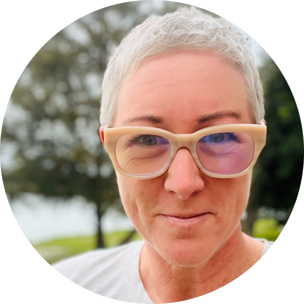
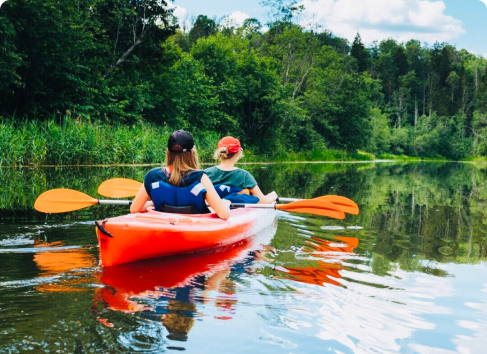
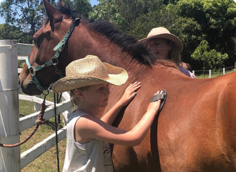
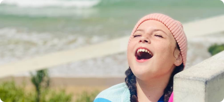
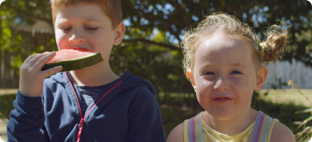
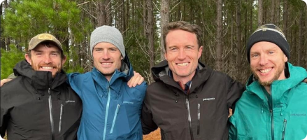

WHO WE ARE
Autism Camp Australia (ACA) is registered with the Australian Securities & Investment Commission (ASIC) as a company limited by guarantee. ACA is registered as a charitable organisation with DGR status, as a Public Benevolent Institution with the Australian Charities and Not-For Profit and Charities Commission (ACNC). ACA’s Board of Directors is represented by 85% people with disability personally and/or in their families. ACA’s Executive Team is represented by 100% people with disability personally and/or in their families.
“We all need friends. Real connections. And we all want time to play. Sometimes we just want to shoot the breeze, or stomp around like wild things. We know it’s ok. We’ve found our people. Our community. A place where we can face challenges and discover new things, yet still march to the beat of our own drum. It’s time to just be you.”
Rachel Rowe,
CEO & Founder of Autism Camp Australia

CAMPS & PROGRAMS
ACA has developed a program which includes a range of activities to improve the health and wellbeing of participants. The program caters to autistic young people, aged 7-14, ASD levels 1, 2 and 3 under the Diagnostic and Statistical Manual of Mental Disorders, Fifth Edition (DSM V), and their families.
ACA supports families of autistic young people through a comprehensive evidence-based capacity building and life skills development program for the whole family, which just happens to be in a prime holiday destination, so you get an awesome holiday too.

NSW
Tweed/Byron Hinterland

VIC
The Bellarine Peninsula
OUTCOMES
The program combines group therapy sessions with adventure and art/craft filled activities. All activities are capacity building, encouraging young people to try new experiences, and build on their list of things they love to do.

Autistic Young Persons' Program
- Communication
- Social Interaction
- Sensory and emotional regulation
- Independence and autonomy
- Self-care and daily living
- Self-management
- Fine and gross motor skills
- Social and community participation

Siblings Program
- Emotional and behavioural functioning
- Relationships between family members
- Reduced social isolation
- Enhanced social networks
- Increased resilience
- Ability to maintain their informal support of their autistic siblings

Parent/Carer Program
- Communication
- Social Interaction
- Sensory and emotional regulation
- Independence and autonomy
- Self-care and daily living
- Self-management
- Fine and gross motor skills
- Social and community participation
The ACA program runs over 4 days and 5 nights. The program taps into existing regional group recreation/camp facilities with safety, privacy, autonomy and low sensory input as priorities.